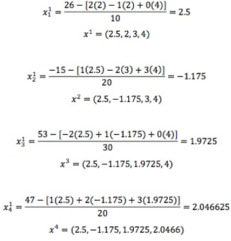

El método de Gauss-Seidel es un método iterativo utilizado para resolver sistemas de ecuaciones lineales. El método se llama así en honor a los matemáticos alemanes Carl Friedrich Gauss y Philipp Ludwig von Seidel, que lo desarrollaron en el siglo XIX. El método se basa en despejar una variable en cada ecuación e ir sustituyendo los valores aproximados obtenidos en las siguientes ecuaciones, hasta alcanzar un nivel de precisión deseado.
El método de Gauss-Seidel tiene varias aplicaciones en el ámbito de la ingeniería, la física, la química y otras ciencias que requieren resolver sistemas de ecuaciones lineales de gran tamaño. Algunas de las ventajas de este método son:
Partiendo de X0= (1,2,3,4)
solución
Iteración 1
Descripción de las fórmulas utilizadas y su significado:
El método de Gauss-Seidel es un método iterativo para resolver sistemas de ecuaciones lineales con una precisión arbitraria. El método se aplica a matrices cuadradas con elementos no nulos en sus diagonales y la convergencia se garantiza si la matriz es diagonalmente dominante o si es simétrica y definida positiva. La fórmula del método de Gauss-Seidel es la siguiente:
donde xi(k) es la aproximación de la variable xi en la iteración k, aij son los coeficientes de la matriz del sistema, y bi son los términos independientes. El método consiste en partir de una aproximación inicial x(0) y calcular las siguientes aproximaciones usando la fórmula anterior, hasta que se alcance un criterio de convergencia, que puede ser un error máximo o un número de iteraciones.
El método de Gauss-Seidel es una variante del método de Jacobi. El objectivo del metodo es encontrarvalores de las variables
de un sistema de ecuaciones lineales (matrices), mediante una serie de cálculos por etapas; donde en cada etapa se encuentran
los respectivo valores aproximados. En general los métodos iterativos funcionan como el método de
punto fijo y tienen error de trucamineto.
El método de Gauss-Seidel se diferencia al método de Jacobi, donde los valores actualizados de Xi sustituyen de inmediato a los valores anteriores y son los que se utilizan para hallar los nuevos valores, debido a esto el método se desarrolla en orden y uno a uno.
El método consiste; en que dado el sistema de ecuaciones, se debe de espejar de cada ecuacion la variable Xi, luego de tener el despeje en cada ecucion se deben dar valores iniciales para cada Xi de manera arbitraria y ya se procede a realizar las diferentes interaciones respectivas,
de la siguiente forma:
1. Hallamos X1 con la ecuación (1) y los valores iniciales de X2 y X3
2. Hallamos X2 con la ecuación (2) y el nuevo valor de X1 y el valor inicial de X3
3. Hallamos X3 con la ecuación (3) y los nuevos valores de X1 y X2
Para las siguiente iteraciones:
1. Hallamos X1 con la ecuación (1) y los valores anteriores de X2 y X3
2. Hallamos X2 con la ecuación (2) y el valor nuevo de X1 y el valor anterior de X3
3. Hallamos X3 con la ecuación (3) y los valores nuevos de X1 y X2
El método se detiene cuando sobrepasa el numero de interaciones propuestas o cuando el error es menor al error ingresado por el usuario.
Video Tutorial de como realizar un ejercicio del Método-Seidel